Наука · журнал «ДентАрт» 2020 №2
Алгоритм фотографування у процесі моделювання зубів
The Algorithm for Photographing in the Teeth Modeling Process
Реєстрація об'єктів має величезне значення у будь-якому виді творчості. З дитинства на уроках малювання нам розвивали зорову пам'ять і спостережливість, учили малювати натюрморти, ліпити з пластиліну різні фігурки, створювати подібне, відтворювати навколишні предмети у їх первісному вигляді як на аркушику паперу, так і в багатовимірному просторі.
Цікаво зазначити, що за короткий час спостереження за об'єктом виконавцеві потрібно було проаналізувати чимало характеристик предмета, його габаритний обрис, співвідношення цілого і частин, враховувати загальні закономірності і дрібніші деталі побудови об'єкта, розподіляти поверхні на підповерхні, розуміти колірну гаму, уловлювати багато тонкощів і деталей.
Одним з об'єктивних критеріїв реєстрації того, що відбувається, є процес фотографування. Це дивовижний вид художньої творчості, об'єктивний критерій наших діянь. Лише мить — і за допомогою сучасного обладнання у нашому розпорядженні вже назавжди залишаються архіви різних об'єктів, які ми можемо тривалий час аналізувати, спостерігати з різних ракурсів і, як і раніше, розвивати зорову пам'ять та спостережливість. Однак предметом спостереження вже є світлини.3,4 Зародившись майже 200 років тому, фотографія стала найдоступнішою з усіх форм мистецтва. Її першовідкривачі навряд чи могли передбачити, що вона проникне і органічно впишеться в усі сфери життєдіяльності людини.
Дизайн дослідження
У центрі уваги нашої професії зуби — унікальні об'єкти, які викликають до себе величезний інтерес не лише з боку пацієнтів, але й з боку лікарів-стоматологів, зубних техніків. Фотографуючи їх з різних ракурсів, уже по світлинах ми детально вивчаємо різноманіття форм, рельєфу поверхонь, колірні відтінки зубів.1,2 Чудовим помічником у вивченні перерахованих характеристик зубів є фотографування.
Метою нашого дослідження була розробка алгоритму дій при фотографуванні зубів для детальнішого вивчення морфології їх поверхонь.
Ми розробили алгоритм фотофіксації для отримання більш інформативної картини по кожному зразку зуба. Алгоритм складається з трьох етапів з певною послідовністю знімків, від 15 до 30, для кожного зуба.
Три етапи фотографування зуба
Перший етап полягає в радіальному фотографуванні зуба з усіх боків. Для цього зуб розташовується вертикально, вестибулярним або щічним боком до об'єктива камери. Камера встановлюється на штативі під кутом 90-75° до поверхні зуба (рис. 1, 2). Робиться знімок, і потім здійснюється поворот зуба по радіальній осі, без зміни положення камери і положення кріплення зуба (рис. 3). На першому етапі робимо від 8 до 15 знімків, в залежності від приналежності зуба до групи.
Другий етап — фотографування жувальної або ріжучої поверхні — 5-10 знімків. Положення камери на штативі не змінювалося, а змінювалося розташування зуба на тримачі «третя рука». Фотознімання розпочиналося з паралельного розташування зуба і фотографування вестибулярної або щічної поверхні (рис. 4), потім робився поворот зуба по осі (рис. 5, 6) із завершенням обертання на язичному боці (рис. 7).
Третій, додатковий етап використовувався для фотографування бічних зубів у площині жувальної поверхні під різними кутами (рис. 8, 9). Зміна кута дозволила створити ефект півтіні горбиків оклюзійної поверхні, що надає зображенню вираженішої рельєфності.
Для фотографування ми використовували дзеркальну фотокамеру, макрооб'єктив 100 mm f/2.8, бокс для макрознімання (лайт-куб) (рис. 10), два імпульсні спалахи із синхронізаторами. Для утримування об'єкта застосовувався тримач «третя рука», який використовується для утримання радіодеталей. Значення світлочутливості — ISO 200, витримки — 1/80-1/100 с. Діафрагма була встановлена в максимально закрите положення f/32, що дозволяє домогтися максимальної глибини різкості. Значення для різних камер та об'єктивів можуть відрізнятися. Імпульсні спалахи налаштовувалися в ручному режимі і розташовувалися по два боки від бокса для фотографування таким чином, щоб світло проходило через тканину і не створювало виражених відблисків на поверхні зубів (рис. 11). У лайт-кубі використовувався фон-підкладка чорного кольору для ліпшого контрасту.
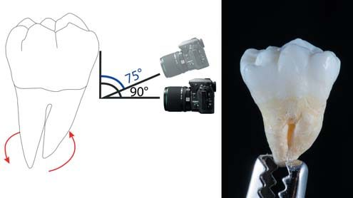
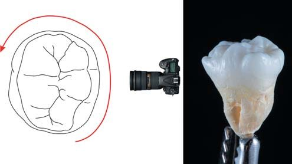
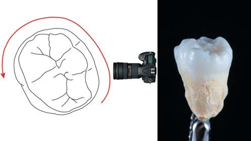
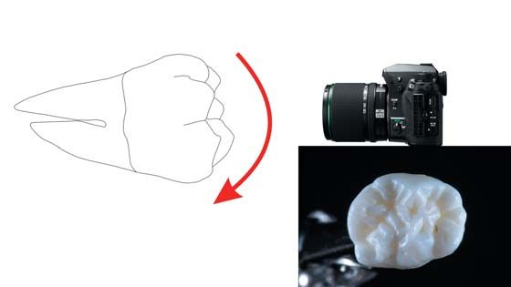
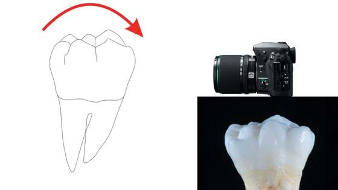
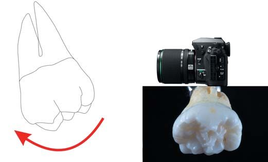
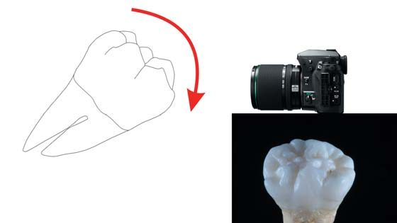
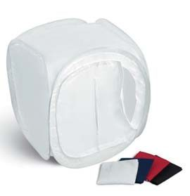
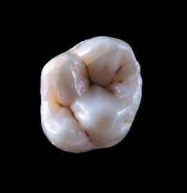
Показ морфології зуба
Етапи вивчення морфології зубів за допомогою дентальної фотографії демонструються на прикладі першого моляра правої верхньої щелепи. Із заздалегідь отриманих знімків за розробленою нами методикою відбираємо від 10 до 15 світлин. Вони повинні максимально інформативно відображати поверхні зуба з різних ракурсів. За допомогою фоторедактора Adobe Photoshop робимо колаж, у центрі якого розташоване зображення оклюзійної поверхні зуба (рис. 12).
Потім знизу додали ряд фотографій з першого етапу фотографування — радіальне фотографування зуба 16 з усіх боків (рис. 13). По центру рисунка, ліворуч і праворуч від фотографії зуба 16 з боку оклюзійної поверхні розташовані зображення з третього етапу — фотографування поверхонь під різними кутами (рис. 14). Зверху додано ряд фотографій, які були зроблені на другому етапі фотографування зуба — фотографування жувальної поверхні зі зміною положення зуба (рис. 15).
Готовий колаж максимально інформативний, використовуючи його, можна легко розглянути різні поверхні зуба одночасно, і це дозволяє точніше деталізувати жувальну поверхню і допомагає у подальшій роботі над контурною розміткою об'єкта.
«Контурна карта» зуба 16
Обробка фото жувальній поверхні провадиться в Adobe Photoshop: був вирізаний контур зуба і розташований на чистому аркуші. Потім зображення імпортували у графічний редактор векторної графіки Coral DRAW. Роботу над розміткою оклюзійної поверхні можна розподілити на три етапи.
На першому етапі окреслено зовнішній контур зуба 16 (рис. 16). На другому етапі були окреслені вершини горбиків і обриси оклюзійної поверхні зуба 16 (рис. 17). Третій етап полягає в розмітці фісур, гребенів і валиків оклюзійної поверхні зуба 16. Для зручного диференціювання спочатку лініями чорного кольору було виділено межі оклюзійної поверхні і фісури, а потім лініями червоного кольору — валики та гребені (рис. 18).
На завершення зроблені корекція і перевірка правильності розмітки оклюзійної поверхні. Створений колаж можна вивести на робочий монітор або планшет і використовувати на всіх етапах моделювання. Процес розмітки нероздільний з постійним спостереженням і вивченням різних поверхонь зуба (етап розвитку спостережливості, зорової пам'яті).
Тонування коронкової частини зуба 16 зроблене за модульними технологіями (Ломіашвілі Л. М., 2004) в Adobe Photoshop. Для зручності позначення для кожного модуля обирається свій колір, який зафіксували в HEX-форматі (HEX — шістнадцяткове представлення RGB), щоб у подальших роботах була можливість повної відтворюваності обраного кольору. Для мезіально-щічного модуля — блакитний, дистально-щічного — синій, мезіально-піднебінного — малиновий, дистально-піднебінного — помаранчевий, додаткового мезіального — жовтий (рис. 19).
Таким чином, вашій увазі пропонуються фотографії інтактних зубів людини, зроблені з різних ракурсів. Розподіл поверхонь на підповерхні зроблено з точки зору модульних технологій. Цей концептуальний підхід до будови зубів допомагає на етапах моделювання, шліфування й полірування поверхонь виконувати алгоритми, певні кроки побудови об'єктів більш усвідомлено, послідовно, осмислено і, отже, професійно. Можливо, наше бачення ситуації допоможе вам ліпше орієнтуватися в навколишньому багатовимірному просторі, упевненіше реконструювати зуб «крок за кроком», наближаючись до його природних форм.
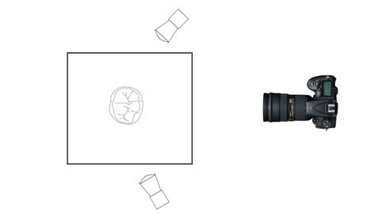
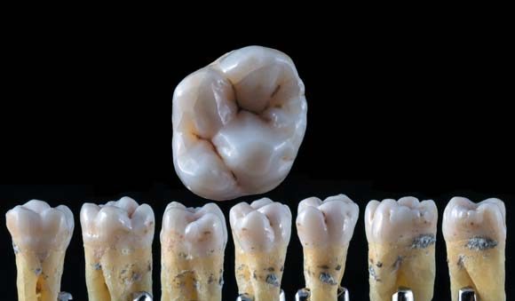
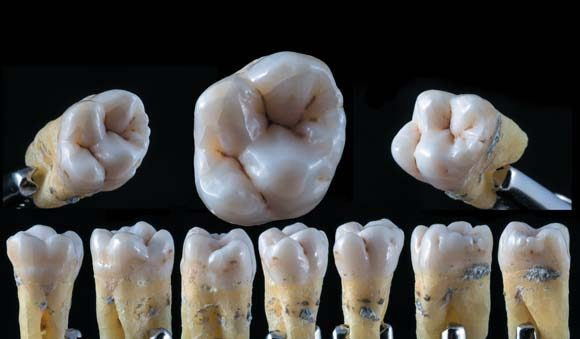
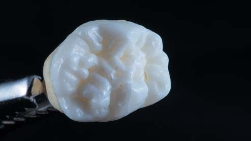
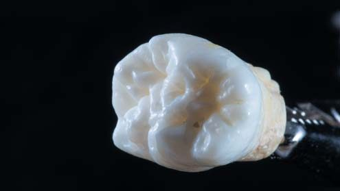
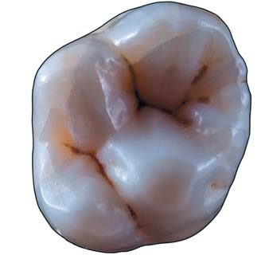
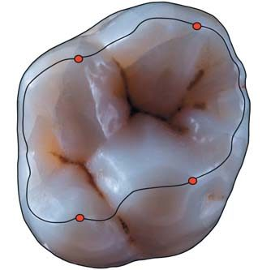
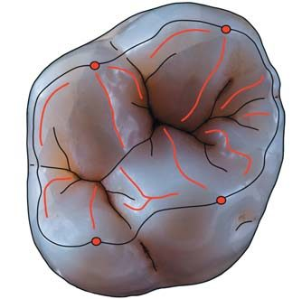
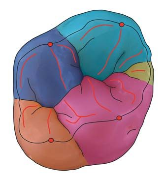
Моделювання зубів «з чистого аркуша»
Для відпрацювання практичних навичок використовуємо метод моделювання «з чистого аркуша». На відміну від відновлення анатомічної форми на фантомі чи видаленому зубі, цей метод дозволяє об'ємно, «крок за кроком», вибудувати анатомічну форму зуба, без тих підказок, які диктує вже наявна, задана форма зуба. Цей метод розвиває об'ємне бачення і дозволяє удосконалювати навички моделювання зубів.
Користуючись уже готовими фотографіями з розміченими контурами, ми створюємо рисунок жувальній поверхні на аркуші паперу, позначаємо контур, центральну фісуру, червоним кольором позначаємо основні гребені (рис. 20). Використовуючи модульну технологію побудови зубів, наносимо композит у формі структурної одиниці — ікла. Він виступає як модуль-одонтомер2 (рис. 21, 22).
При моделюванні верхнього моляра використовуємо 4 основних модулі-одонтомери і один додатковий, як було визначено при розмітці і тонуванні фотографій. Модулі розміщуємо спрямованими до центральної фісури. Простір, що залишився, заповнюємо композитом у відповідності з анатомією коронкової частини зуба (рис. 23, 24).
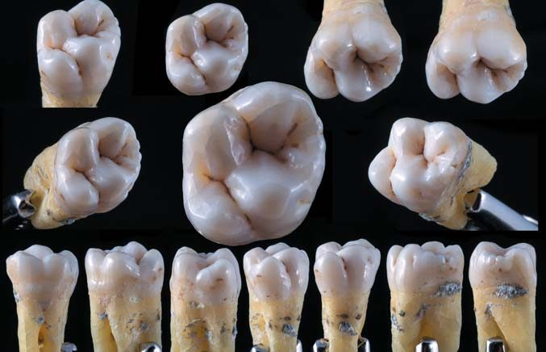
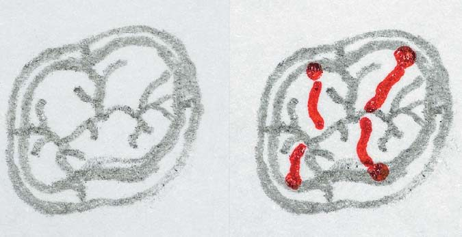
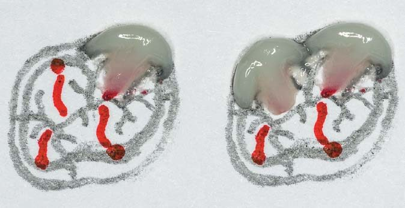
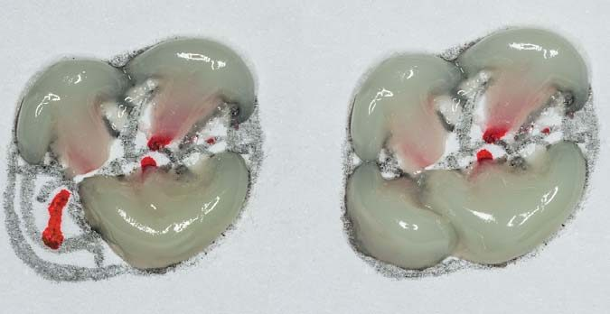
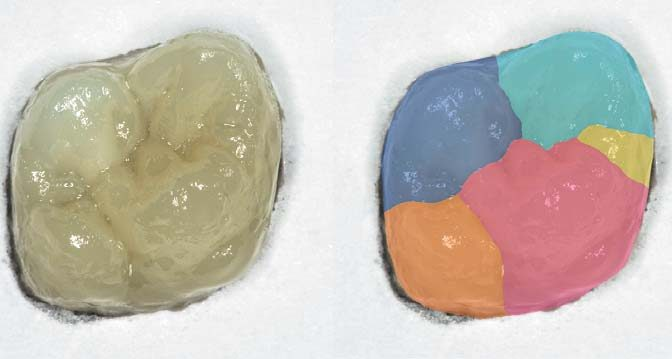
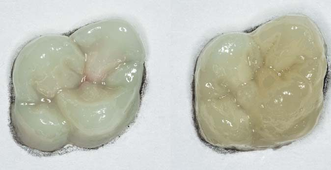
Висновки
Таким чином, за наявними фотографіями інтактного зуба задаємо габаритний обрис його коронкової частини на площині, визначаємо контури основних і додаткових морфологічних елементів і «з чистого аркуша», крок за кроком, з композитного матеріалу моделюємо об'єм і форму досліджуваного зуба. Запропоновані нами алгоритм фотографування інтактних зубів, складання колажу зображення з різних ракурсів, алгоритм покрокового моделювання за модульними технологіями дозволяють як стоматологам, так і зубним технікам удосконалюватися у відновленні зубів, а також розвивати художні здібності, прагнучи до вивчення гармонії форм, створених природою.
Фотореєстрація форм зубів під різними кутами — дивовижне заняття! У процесі фотографування оператор потрапляє у «світ об'єктивної реальності і наукової фантазії». Відбувається не тільки детальніше усвідомлення форм і габаритних обрисів зуба, але й візуалізація більш тонких морфологічних структур об'єкта. Поворот зуба навіть на незначний кут дозволяє побачити унікальні природні гармонії форм, нове положення відкриває нове бачення об'єкта. Кожна світлина неповторна, як і та мить, яку вона зафіксувала. А найунікальніше те, що після фотографування залишається фотоархів, документація, переглядаючи яку, стоматологи мають можливість багато що проаналізувати.
Таємниці гармонії відкриваються не кожному і не відразу! Лікарі-стоматологи і зубні техніки, які володіють фотореєстрацією і аналізують свої практичні роботи, оцінюють реставрацію зубів більш усвідомлено, детально, при цьому абсолютно по-новому розвивається глибоке бачення клініко-морфологічної ситуації, стоматологічного статусу пацієнта.
Література
- Ломиашвили Л. М. Изучение анатомо-морфологических особенностей тканей зубов с целью достижения достойных результатов моделирования в эстетической стоматологии / Л. М. Ломиашвили, С. Г. Михайловский, Д. В. Погадаев, Л. Ю. Золотова // Институт стоматологии. — 2019. — №3 (84). — С. 110-114.
- Ломиашвили Л. М. Искусство моделирования и реставрации зубов / Ломиашвили Л. М., Аюпова Л. Г., Погадаев Д. В., Михайловский С. Г. — Омск: Полиграф, 2014. — 436 с.
- Мартьянов И. Н., Апресян С. В., Акулович А. В., Тиунова Н. В., Матело С. К. Фотопротокол в современной стоматологии. — М.: Изд-во «Поли Медиа Пресс», 2018. — 80 с.
- Хеджкоу Д. Искусство цветной фотографии. — М.: Изд-во «Планета», 1988. — 240 с.